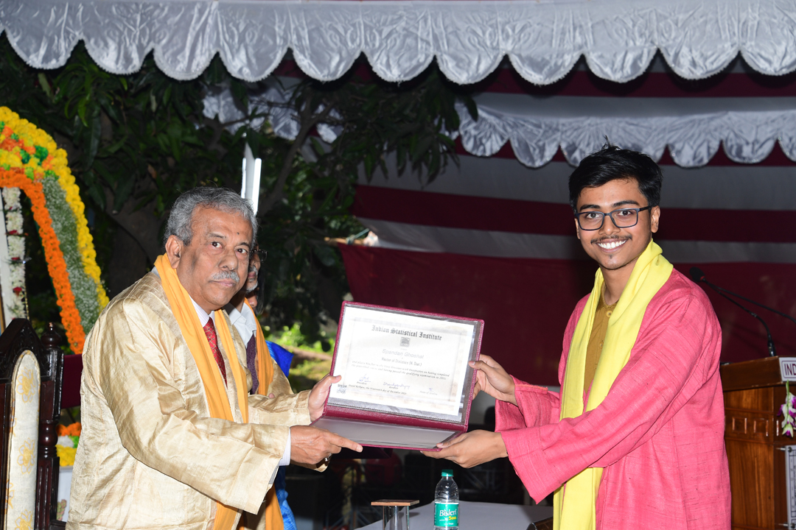

High-Dimensional Inference
Developing adaptive procedures for selective inference and uncertainty quantification when the parameter space far exceeds the sample size.
- Sparsity-aware confidence sets
- Post-selection validity
PhD Candidate in Statistics · Indian Statistical Institute, Kolkata
I am Spandan Ghoshal, a doctoral researcher in Statistics at the Indian Statistical Institute, Kolkata. My work centres on high-dimensional inference, nonparametric change-point detection, and the theoretical underpinnings of statistical learning.
Prior to the PhD, I completed my M.Stat (specialising in Computational Statistics) at ISI Kolkata, and earned a B.Sc. (Hons) in Statistics from Presidency University, Kolkata.
Beyond the classroom, I practise Indian classical flute and harmonica, and draw quiet inspiration from Vedic philosophical traditions that inform both my outlook on research and daily life.

My research lies at the interface of high-dimensional theory and data-driven methodology. I strive for a balance of rigorous mathematical analysis and practical relevance.
Developing adaptive procedures for selective inference and uncertainty quantification when the parameter space far exceeds the sample size.
Designing nonparametric methods to detect abrupt distributional shifts in dependent data streams with provable delay and false-alarm control.
Bridging empirical process techniques with modern learning models to understand generalisation in structured prediction tasks.
Reflective essays at the intersection of research, music, and philosophy. A few recent entries:
Why inner practices matter even as artificial intelligence reshapes our material pursuits.